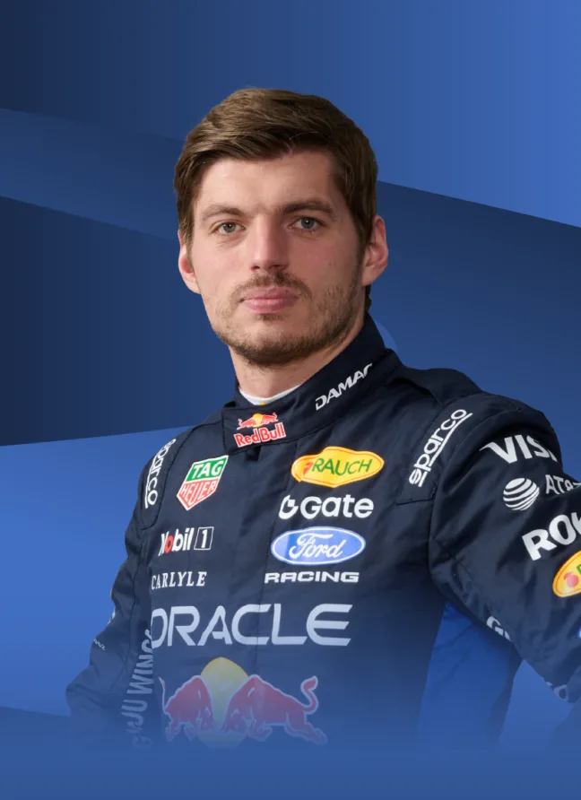

Pembalap Formula 1 — Red Bull Racing
MAX
VERSTAPPEN

Profil Singkat
Max Emilian Verstappen (lahir 30 September 1997) adalah seorang pembalap mobil profesional asal Belanda yang saat ini berkompetisi di ajang Formula Satu bersama tim Red Bull Racing. Ia merupakan salah satu pembalap muda paling berbakat dalam sejarah F1 dan dikenal dengan gaya balapnya yang agresif serta kemampuannya yang luar biasa dalam kondisi trek basah.
Biodata Pribadi
Verstappen lahir di Hasselt, Belgia. Darah balap mengalir deras di tubuhnya, karena ayahnya, Jos Verstappen, juga merupakan mantan pembalap Formula 1, sementara ibunya, Sophie Kumpen, adalah seorang mantan pembalap karting sukses.
Jalur Menuju Juara Dunia
Perjalanan Karier
Tahapan Karier
-
2005–2013
Karting
Memulai karier balap sejak usia 4 tahun dan memenangkan berbagai kejuaraan karting tingkat nasional dan internasional.
-
2014
Formula 3 Eropa
Berkompetisi di FIA European Formula 3 Championship dan berhasil menempati peringkat ketiga di akhir musim.
-
2015–2016
Scuderia Toro Rosso
Melakukan debut di Formula 1 pada usia 17 tahun 166 hari, menjadikannya pembalap termuda dalam sejarah F1.
-
2016–Sekarang
Red Bull Racing
Pindah ke tim utama Red Bull pada musim 2016 dan langsung memenangkan balapan pertamanya di GP Spanyol.
Prestasi & Gelar Juara Dunia
Juara Dunia Formula 1 — Menghalahkan Lewis Hamilton di Abu Dhabi GP
Juara Dunia Formula 1 — dominasi rekor kemenangan terbanyak
Juara Dunia Formula 1 — mengunci gelar di Qatar
Juara Dunia Formula 1
Profil Pengembang
Kontak Pembuat Website
Website biografi ini dibuat sebagai bagian dari tugas laporan praktikum web design menggunakan HTML dan CSS di Visual Studio Code.
Informasi Pengembang
Umpan Balik Pengunjung
Formulir Saran
Berikan masukan, kritik, atau saran Anda mengenai website biografi ini.